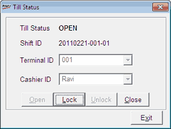

This option allows you to manage the status of a Till, as per requirement. The current status of a Till has a major role while performing any Till related transactions. To start with any Till activities, you need to open the corresponding Till.
How to reach: Cash > Till Management > Till Status
The Till Status window is displayed.

Till Status: Displays the current status of the Till.
Shift ID: Displays the current Shift ID of the Till. It is a unique ID, generated internally and assigned to a Till, at the time of opening the Till. This ID is extensively used in Till Management to refer to any transactions recorded in a Till.
Terminal ID: Displays the terminal ID (node ID) of the Till.
Cashier ID: Displays the user ID (login ID) of the cashier.
Open: To open the Till. The Till Status changes to OPEN on selecting this option. You are allowed to perform any activities related to a Till, except reconciliation, only when the Till is in opened status.
Lock: To lock the Till. The Till Status changes to LOCKED on selecting this option. By locking a Till, you can stop the transactions related to the Till, without closing it.
Unlock: To unlock the counter when it is in locked status. The Till Status changes to OPEN on selecting this option.
Close: To close the Till. The Till Status changes to CLOSED on selecting this option. If you try to close a Till without transferring the entire amount in the Till, you will be alerted with a message and then redirected to the Cash Lift option. Full cash lift, i.e., the transfer of the entire amount from a Till to a cash collection point, is mandatory for closing a Till.